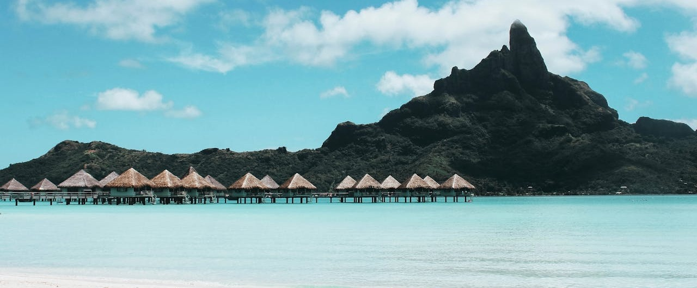
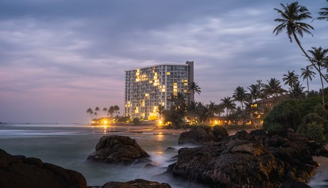
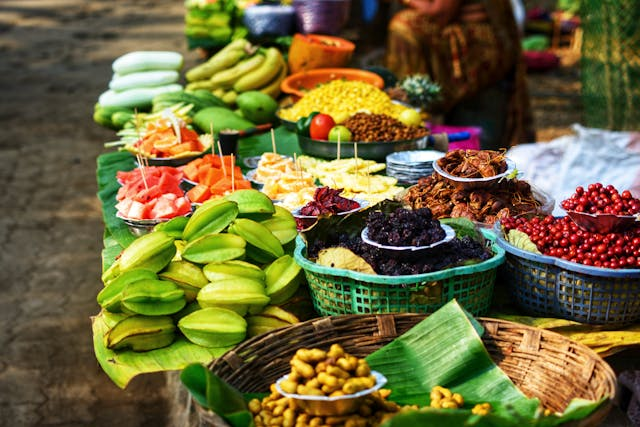
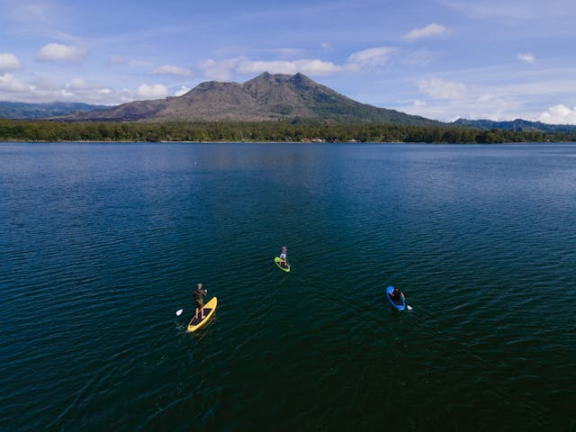
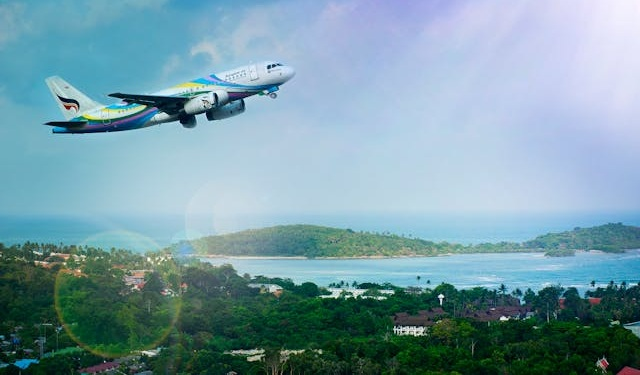
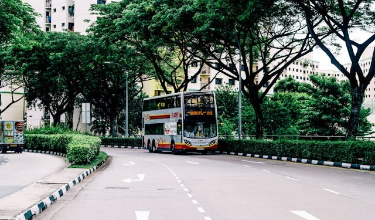

Taniti offers a wide variety, from an inexpensive hostel to a large, four-star resort. There are many small,
family-owned hotels and a growing number of bed-and-breakfasts.
All types of lodging are strictly regulated and regularly inspected by the Tanitian government.


Restaurants: Taniti currently has 10 restaurants: five serve mostly local fish and rice, three serve
American-style meals, and two serve Pan-Asian cuisine.
Grocery Stores: Taniti has two supermarkets, two smaller grocery stores, and one convenience store that is
open 24 hours a day.
Entertainment:
Most people visit Taniti to enjoy the beaches, explore the rainforest, and visit the volcano. However, there
are other things to do, including visiting a local history museum, going on chartered fishing tours,
snorkeling, zip-lining in the rainforest, visiting several pubs, including a microbrewery, dancing at a new
dance club, seeing a movie, taking helicopter rides, playing at an arcade, visiting art galleries, and
bowling. Also, a nine-hole golf course should be operational by next year. Many of these activities are
located at Merriton Landing, a rapidly developing area on the north side of Yellow Leaf Bay.

Sightseeing:
Most tourists spend most of their time in Taniti City, which boasts native architecture and nearby white, sandy
beaches that encircle Yellow Leaf Bay. Other popular activities include boat or bus tours of the island, hikes
in the rainforest, or visits to Taniti’s active volcano.


Transportation to the island:
Almost all visitors arrive in Taniti by air, though some arrive on a small cruise ship that docks in Yellow
Leaf Bay for one night per week. Taniti is served by a small airport that can accommodate small jets and
propeller planes. Taniti is expanding the airport so larger jets can land on the island within the next few
years.

Ground Transportation:
Public buses serve Taniti City and run from 5 a.m. to 11 p.m. every day. Private buses serve the rest of the
island. Taxis are available in Taniti City, and rental cars can be picked up from a local agency near the
airport. Bikes and helmets are available to rent from several vendors (helmets are required by law). Taniti City
is fairly flat and very walkable. Many tourists stay in the area around Merriton Landing; it's easy to explore
on foot.